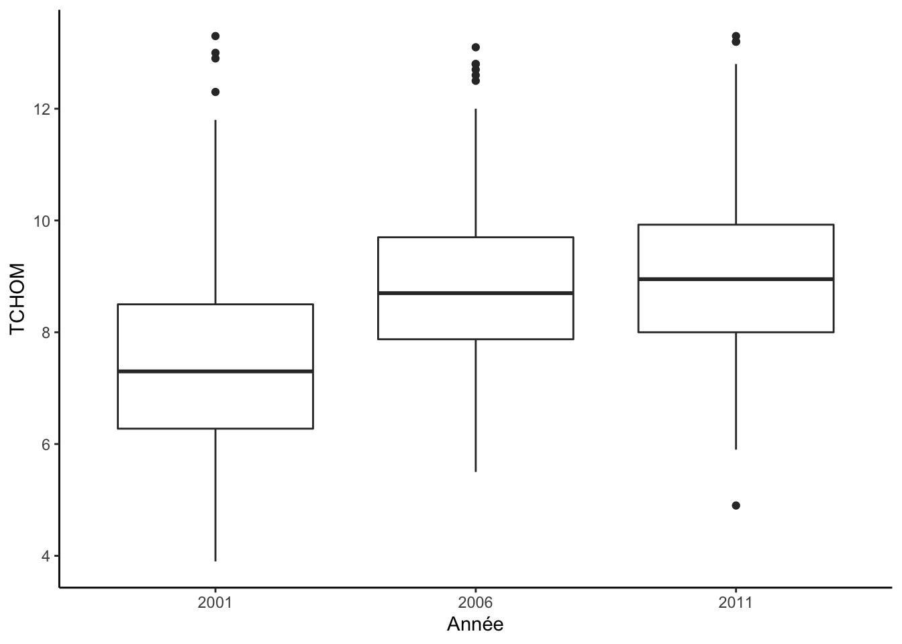

Chapitre 3 Manipuler les données avec dplyr
Les données sont souvent le point de départ d’une étude statistique. Elles sont généralement d’abord stockées dans des fichiers (txt, xls, csv) et une des premières étapes est d’amener ces données dans R et de les affecter à un objet de type dataframe. Il est par conséquent très important connaître et maîtriser les opérations qui permettent de réaliser ces importations. Nous présentons tout d’abord quelques fonctions qui permettent de faire ces importations avant de présenter le package dplyr qui offre une syntaxe claire pour manipuler des données (correctement importées).
3.1 Importer des données
Les fonctions read.table et read.csv sont les fonctions standards de R pour importer des données à partir de fichiers .txt ou .csv. Il est important de bien gérer le chemin du répertoire où se trouve le fichier. On peut le spécifier explicitement ou utiliser des fonctions comme file.path :
path <- file.path("data/", "piscines.csv") #premier : répertoire, deuxième : fichier
piscines <- read.csv(path)
class(piscines)
[1] "data.frame"
summary(piscines)
Name Address Latitude
Length:20 Length:20 Min. :-27.61
Class :character Class :character 1st Qu.:-27.55
Mode :character Mode :character Median :-27.49
Mean :-27.49
3rd Qu.:-27.45
Max. :-27.31
Longitude
Min. :152.9
1st Qu.:153.0
Median :153.0
Mean :153.0
3rd Qu.:153.1
Max. :153.2 Il existe plusieurs options importantes dans read.csv, notamment
- sep : le caractère de séparation (espace, virgule…)
- dec : le caractère pour le séparateur décimal (vigule, point…)
- header : logique pour indiquer si le nom des variables est spécifié à la première ligne du fichier
- row.names : vecteurs des identifiants (si besoin)
- na.strings : vecteur de caractères pour repérer les données manquantes.
- …
Le package readr du tidyverse propose d’autres fonctions comme read_csv ou read_delim. Il n’y a pas de différences énormes avec les fonctions standards, les objets créés sont des tibbles et plus des dataframes (même si les tibbles sont des dataframes…). Par exemple
library(readr)
piscines <- read_csv("data/piscines.csv")
summary(piscines)
Name Address Latitude
Length:20 Length:20 Min. :-27.61
Class :character Class :character 1st Qu.:-27.55
Mode :character Mode :character Median :-27.49
Mean :-27.49
3rd Qu.:-27.45
Max. :-27.31
Longitude
Min. :152.9
1st Qu.:153.0
Median :153.0
Mean :153.0
3rd Qu.:153.1
Max. :153.2
class(piscines)
[1] "spec_tbl_df" "tbl_df" "tbl" "data.frame" Enfin si on n’est pas très à l’aise avec ces fonctions, on pourra utiliser le bouton Import Dataset qui se trouve dans l’onglet Environment de RStudio. Cette manière de procéder fonctionne pour des jeux de données “propres”. Si les bases contiennent trop de spécificités, on devra utiliser les fonctions préentées précédemment avec les bonnes options.
Importer les données qui se trouvent dans le fichier mydata.csv. On utilisera la fonction
read.csvavec les options par défaut.Importer correctement les données qui se trouvent dans le fichier mydata.csv (utiliser
sep,decetrow.names).Importer les données qui se trouvent dans le fichier mydata2.csv.
Ce fichier contient des données manquantes (identifiées par un point). A l’aide de na.strings, refaire l’importation en identifiant les données manquantes.
Changer les levels de la variable
sexen woman et man (on pourra utiliser la fonction levels).
1ère façon :
2ème façon avec recode_factor
On considère les 3 jeux de données suivants, au format tibble :
df1 <- tibble(name=c("Mary","Peter","John","July"),age=c(18,25,21,43))
df2 <- tibble(name=c("Zac","Julian"),age=c(23,48))
df3 <- tibble(size=c(154,178,182,134,142),name1=c("Peter","Mary","July","John","stef"))
df1
# A tibble: 4 x 2
name age
<chr> <dbl>
1 Mary 18
2 Peter 25
3 John 21
4 July 43
df2
# A tibble: 2 x 2
name age
<chr> <dbl>
1 Zac 23
2 Julian 48
df3
# A tibble: 5 x 2
size name1
<dbl> <chr>
1 154 Peter
2 178 Mary
3 182 July
4 134 John
5 142 stef On souhaite assembler ces tables en utilisant les fonctions de jointure du tidyverse (left_join, full_join par exemple). On pourra consulter la cheatsheet Data transformation with dplyr (help -> cheatsheets -> …).
Assembler
df1avecdf2en utilisant bind_rows et calculer la moyenne de la variableage. On appelleradfcette nouvelle table.Assembler
dfavecdf3en utilisant full_join.Faire la même chose avec inner_join.
Expliquer les différences entre full_join et inner_join.
3.2 Le package dplyr
dplyr est un package du tidyverse qui permet de faciliter la manipulation des données. Il propose une syntaxe claire (basée sur une grammaire) pour travailler sur les données. On pourra trouver des informations à cet url https://spark.rstudio.com/dplyr.html ou sur la cheatsheet.
Nous avons vu quelques opérations standards pour manipuler les données. Par exemple, on peut obtenir les Longitude et Latitude des piscines ayant une Longitude supérieure à 153 avec
piscines[piscines$Longitude>153,c("Longitude","Latitude")]
# A tibble: 16 x 2
Longitude Latitude
<dbl> <dbl>
1 153. -27.6
2 153. -27.5
3 153. -27.4
4 153. -27.5
5 153. -27.5
6 153. -27.5
7 153. -27.6
8 153. -27.5
9 153. -27.5
10 153. -27.5
11 153. -27.5
12 153. -27.4
13 153. -27.6
14 153. -27.3
15 153. -27.5
16 153. -27.5dplyr propose de faire la même chose avec une syntaxe plus claire
library(tidyverse) #ou library(dplyr)
piscines %>% select(Longitude,Latitude) %>% filter(Longitude>153)
# A tibble: 16 x 2
Longitude Latitude
<dbl> <dbl>
1 153. -27.6
2 153. -27.5
3 153. -27.4
4 153. -27.5
5 153. -27.5
6 153. -27.5
7 153. -27.6
8 153. -27.5
9 153. -27.5
10 153. -27.5
11 153. -27.5
12 153. -27.4
13 153. -27.6
14 153. -27.3
15 153. -27.5
16 153. -27.5Le code est plus efficace et facile à lire.
dplyr propose une grammaire dont les principaux verbes sont :
- select() : selectionner des colonnes (variables)
- filter() : filter des lignes (individus)
- arrange() : ordonner des lignes
- mutate() : créer des nouvelles colonnes (nouvelles variables)
- summarise() : calculer des résumés numériques (ou résumés statistiques)
- group_by() : effectuer des opérations pour des groupes d’individus
Nous les présentons dans la partie suivante.
3.2.1 Les principaux verbres dplyr
Le verbe select()
Il permet de sélectionner des variables (colonnes) :
Par exemple,
coord <- select(piscines, Latitude, Longitude)
head(piscines, n=2)
# A tibble: 2 x 4
Name Address Latitude Longitude
<chr> <chr> <dbl> <dbl>
1 Acacia Ridge Lei… 1391 Beaudesert Road… -27.6 153.
2 Bellbowrie Pool Sugarwood Street, Be… -27.6 153.
head(coord, n=2)
# A tibble: 2 x 2
Latitude Longitude
<dbl> <dbl>
1 -27.6 153.
2 -27.6 153.On peut utiliser les helper functions (begins_with, end_with, contains, matches) pour des sélections plus précises basées sur le nom des variables.
Le verbe mutate()
Il permet de créer des nouvelles variables
Par exemple
df <- mutate(piscines, phrase=paste("Swimming pool", Name, "is located at the address", Address))
select(df,phrase)
# A tibble: 20 x 1
phrase
<chr>
1 Swimming pool Acacia Ridge Leisure Centre is located at …
2 Swimming pool Bellbowrie Pool is located at the address …
3 Swimming pool Carole Park is located at the address Cnr …
4 Swimming pool Centenary Pool (inner City) is located at …
5 Swimming pool Chermside Pool is located at the address 3…
6 Swimming pool Colmslie Pool (Morningside) is located at …
7 Swimming pool Spring Hill Baths (inner City) is located …
8 Swimming pool Dunlop Park Pool (Corinda) is located at t…
9 Swimming pool Fortitude Valley Pool is located at the ad…
10 Swimming pool Hibiscus Sports Complex (upper MtGravatt) …
11 Swimming pool Ithaca Pool ( Paddington) is located at th…
12 Swimming pool Jindalee Pool is located at the address 11…
13 Swimming pool Manly Pool is located at the address 1 Fai…
14 Swimming pool Mt Gravatt East Aquatic Centre is located …
15 Swimming pool Musgrave Park Pool (South Brisbane) is loc…
16 Swimming pool Newmarket Pool is located at the address 7…
17 Swimming pool Runcorn Pool is located at the address 37 …
18 Swimming pool Sandgate Pool is located at the address 23…
19 Swimming pool Langlands Parks Pool (Stones Corner) is lo…
20 Swimming pool Yeronga Park Pool is located at the addres…On peut également créer plusieurs variables avec un seul mutate :
mutate(piscines,
phrase = paste("Swimming pool", Name, "is located at the address", Address),
unused = Longitude + Latitude
)
# A tibble: 20 x 6
Name Address Latitude Longitude phrase unused
<chr> <chr> <dbl> <dbl> <chr> <dbl>
1 Acacia R… 1391 Beau… -27.6 153. Swimming … 125.
2 Bellbowr… Sugarwood… -27.6 153. Swimming … 125.
3 Carole P… Cnr Bound… -27.6 153. Swimming … 125.
4 Centenar… 400 Grego… -27.5 153. Swimming … 126.
5 Chermsid… 375 Hamil… -27.4 153. Swimming … 126.
6 Colmslie… 400 Lytto… -27.5 153. Swimming … 126.
7 Spring H… 14 Torrin… -27.5 153. Swimming … 126.
8 Dunlop P… 794 Oxley… -27.5 153. Swimming … 125.
9 Fortitud… 432 Wickh… -27.5 153. Swimming … 126.
10 Hibiscus… 90 Klumpp… -27.6 153. Swimming … 126.
11 Ithaca P… 131 Caxto… -27.5 153. Swimming … 126.
12 Jindalee… 11 Yallam… -27.5 153. Swimming … 125.
13 Manly Po… 1 Fairlea… -27.5 153. Swimming … 126.
14 Mt Grava… Cnr wecke… -27.5 153. Swimming … 126.
15 Musgrave… 100 Edmon… -27.5 153. Swimming … 126.
16 Newmarke… 71 Alders… -27.4 153. Swimming … 126.
17 Runcorn … 37 Bonemi… -27.6 153. Swimming … 125.
18 Sandgate… 231 Flind… -27.3 153. Swimming … 126.
19 Langland… 5 Panitya… -27.5 153. Swimming … 126.
20 Yeronga … 81 School… -27.5 153. Swimming … 125.Le verbe filter()
Il permet de sélectionner (filtrer) des individus (lignes) :
Par exemple
p1 <- filter(piscines, Longitude>153.02)
select(p1,Longitude)
# A tibble: 12 x 1
Longitude
<dbl>
1 153.
2 153.
3 153.
4 153.
5 153.
6 153.
7 153.
8 153.
9 153.
10 153.
11 153.
12 153.ou (on sélectionne les piscines dont le nom contient Pool)
df <- filter(piscines, !grepl("Pool", Name))
select(df,Name)
# A tibble: 5 x 1
Name
<chr>
1 Acacia Ridge Leisure Centre
2 Carole Park
3 Spring Hill Baths (inner City)
4 Hibiscus Sports Complex (upper MtGravatt)
5 Mt Gravatt East Aquatic Centre ou (on sélectionne les piscines avec une longitude plus grande que 153.02 ou une latitude plus petite que -27.488)
p2 <- filter(piscines, Longitude>153.02 | Latitude < -27.488)
select(p2, Longitude, Latitude)
# A tibble: 17 x 2
Longitude Latitude
<dbl> <dbl>
1 153. -27.6
2 153. -27.6
3 153. -27.6
4 153. -27.5
5 153. -27.4
6 153. -27.5
7 153. -27.5
8 153. -27.5
9 153. -27.5
10 153. -27.6
11 153. -27.5
12 153. -27.5
13 153. -27.5
14 153. -27.6
15 153. -27.3
16 153. -27.5
17 153. -27.5On peut également utiliser la fonction slice pour choisir des individus à partir de leurs indices :
slice(piscines,5:8)
# A tibble: 4 x 4
Name Address Latitude Longitude
<chr> <chr> <dbl> <dbl>
1 Chermside Pool 375 Hamilton Road, … -27.4 153.
2 Colmslie Pool (Mo… 400 Lytton Road, Mo… -27.5 153.
3 Spring Hill Baths… 14 Torrington Stree… -27.5 153.
4 Dunlop Park Pool … 794 Oxley Road, Cor… -27.5 153.Le verbe arrange()
Il permet d’ordonner les individus en fonction d’une variable
ou
Par exemple
arrange(piscines, Longitude)
# A tibble: 20 x 4
Name Address Latitude Longitude
<chr> <chr> <dbl> <dbl>
1 Bellbowrie Pool Sugarwood Street, … -27.6 153.
2 Carole Park Cnr Boundary Road … -27.6 153.
3 Jindalee Pool 11 Yallambee Road,… -27.5 153.
4 Dunlop Park Pool … 794 Oxley Road, Co… -27.5 153.
5 Newmarket Pool 71 Alderson Stret,… -27.4 153.
6 Ithaca Pool ( Pad… 131 Caxton Street,… -27.5 153.
7 Musgrave Park Poo… 100 Edmonstone Str… -27.5 153.
8 Yeronga Park Pool 81 School Road, Ye… -27.5 153.
9 Spring Hill Baths… 14 Torrington Stre… -27.5 153.
10 Centenary Pool (i… 400 Gregory Terrac… -27.5 153.
11 Acacia Ridge Leis… 1391 Beaudesert Ro… -27.6 153.
12 Chermside Pool 375 Hamilton Road,… -27.4 153.
13 Fortitude Valley … 432 Wickham Street… -27.5 153.
14 Langlands Parks P… 5 Panitya Street, … -27.5 153.
15 Sandgate Pool 231 Flinders Parad… -27.3 153.
16 Hibiscus Sports C… 90 Klumpp Road, Up… -27.6 153.
17 Runcorn Pool 37 Bonemill Road, … -27.6 153.
18 Colmslie Pool (Mo… 400 Lytton Road, M… -27.5 153.
19 Mt Gravatt East A… Cnr wecker Road an… -27.5 153.
20 Manly Pool 1 Fairlead Crescen… -27.5 153.ou
arrange(piscines, desc(Longitude))
# A tibble: 20 x 4
Name Address Latitude Longitude
<chr> <chr> <dbl> <dbl>
1 Manly Pool 1 Fairlead Crescen… -27.5 153.
2 Mt Gravatt East A… Cnr wecker Road an… -27.5 153.
3 Colmslie Pool (Mo… 400 Lytton Road, M… -27.5 153.
4 Runcorn Pool 37 Bonemill Road, … -27.6 153.
5 Hibiscus Sports C… 90 Klumpp Road, Up… -27.6 153.
6 Sandgate Pool 231 Flinders Parad… -27.3 153.
7 Langlands Parks P… 5 Panitya Street, … -27.5 153.
8 Fortitude Valley … 432 Wickham Street… -27.5 153.
9 Chermside Pool 375 Hamilton Road,… -27.4 153.
10 Acacia Ridge Leis… 1391 Beaudesert Ro… -27.6 153.
11 Centenary Pool (i… 400 Gregory Terrac… -27.5 153.
12 Spring Hill Baths… 14 Torrington Stre… -27.5 153.
13 Yeronga Park Pool 81 School Road, Ye… -27.5 153.
14 Musgrave Park Poo… 100 Edmonstone Str… -27.5 153.
15 Ithaca Pool ( Pad… 131 Caxton Street,… -27.5 153.
16 Newmarket Pool 71 Alderson Stret,… -27.4 153.
17 Dunlop Park Pool … 794 Oxley Road, Co… -27.5 153.
18 Jindalee Pool 11 Yallambee Road,… -27.5 153.
19 Carole Park Cnr Boundary Road … -27.6 153.
20 Bellbowrie Pool Sugarwood Street, … -27.6 153.3.2.2 Les verbes summarize et groub_by
Les verbes précédents permettent de manipuler les données en sélectionnant des individus ou variables essentiellement. Ces deux nouveaux verbes vont permettre de calculer des indicateurs statistiques sur un jeu de données.
Le verbe summarize (ou summarise)
Il permet de créer des nouveaux jeux de données qui contiennent des résumés statistiques du jeu de données initial comme la moyenne, variance, médiane de variables. Par exemple
summarise(piscines,
mean_long = mean(Longitude),
med_lat = median(Latitude),
min_lat = min(Latitude),
sum_long = sum(Longitude)
)
# A tibble: 1 x 4
mean_long med_lat min_lat sum_long
<dbl> <dbl> <dbl> <dbl>
1 153. -27.5 -27.6 3061.dplyr contient également les fonction suivantes (souvent utilisées en statistique) :
n(): nombre de lignes (individus d’un jeu de données).n_distinct(): nombre d’éléments distincts dans un vecteur.fisrt()etlast(): premier et dernier élément d’un vecteur.
Par exemple, on obtient le nombre de piscines dans le jeu de données, et la longitude de la dernière piscine avec
summarise(piscines,n())
# A tibble: 1 x 1
`n()`
<int>
1 20
summarise(piscines,last(Longitude))
# A tibble: 1 x 1
`last(Longitude)`
<dbl>
1 153.On peut aussi utiliser summarise_all, summarise_at qui vont permettre de répéter les mêmes opérations sur plusieurs variables. Par exemple
Regrouper des données avec Group_by
group_by permet d’appliquer une ou des opérations à des groupes de données (ou d’individus). Par exemple, imaginons que l’on souhaite calculer les longitudes moyennes des piscines scindées en 2 groupes : petites et grande latitudes. On créé d’abord une variable lat_dis qui permet d’identifier les latitudes (petite ou grande) :
lat_mean <- piscines %>% summarise(mean(Latitude))
pisc1 <- piscines %>% mutate(lat_dis=factor(Latitude>as.numeric(lat_mean)))
levels(pisc1$lat_dis) <- c("Low","High")Il reste maintenant à utiliser group_by pour obtenir les longitudes moyennes des 2 groupes :
3.2.3 Assembler des verbes avec l’opérateur de chainage %>%
Un des principaux intérêts de dplyr est bien entendu d’utiliser plusieurs verbes pour arriver au résultat souhaité. C’est ce qui est fait plus haut et nous observons que la syntaxe n’est pas facile à lire. Le package propose un opérateur de chainage ou pipe opérateur qui permet de rentre cette syntaxe plus lisible. Cet opérateur consiste à décomposer le code étape par étape et à relier ces étapes par le symbole %>%. On peut par exemple réécrire l’exemple précédent avec :
Le jeu de données
Étape
group_byÉtape
summarisepisc1 %>% group_by(lat_dis) %>% summarise(mean_long=mean(Longitude)) # A tibble: 2 x 2 lat_dis mean_long <fct> <dbl> 1 Low 153. 2 High 153.qui donne le résultat souhaité.
Cet opérateur peut être utilisé pour toutes les fonctions R. Il revient à considérer comme premier argument du terme à droite du pipe le terme à gauche de ce dernier. Par exemple
Il est recommandé d’utiliser cet opérateur lorsque on chaîne les verbes dplyr, la syntaxe est beaucoup plus claire.
3.2.4 Quelques exercices
On considère le jeu de données iris
Répondre aux questions suivantes en utilisant les verbes dplyr et l’opérateur %>%.
Sélectionner les variables
Petal.WidthetSpecies.Construire une table qui contient uniquement les iris d’espèce
versicolorouvirginica(on pourra utiliser le symbole|pour la condition ou).Calculer le nombre d’iris de l’espèce
setosaen utilisant summarise.Calculer la moyenne de la variable
Petal.Widthpour les iris de l’espèceversicolor.Ajouter dans le jeu de données la variable
Sum_Petalqui correspond à la somme dePetal.WidthetSepal.Width.Calculer la moyenne et la variance de la variable
Pepal.Lengthpour chaque espèce (on pourra utiliser group_by).
On considère la table hflights qui contient des informations sur les vols au départ des aéroports Houston airports IAH (George Bush Intercontinental) et HOU (Houston Hobby):
La variable Unique Carrier renseigne sur la compagnie du vol. On recode cette variable afin que la compagnie soit plus explicite :
lut1 <- c("AA" = "American", "AS" = "Alaska", "B6" = "JetBlue", "CO" = "Continental",
"DL" = "Delta", "OO" = "SkyWest", "UA" = "United", "US" = "US_Airways",
"WN" = "Southwest", "EV" = "Atlantic_Southeast", "F9" = "Frontier",
"FL" = "AirTran", "MQ" = "American_Eagle", "XE" = "ExpressJet", "YV" = "Mesa")On fait de même pour la variable CancellationCode :
On effectue maintenant les changements dans la table pour obtenir une nouvelle version de hflights :
hflights1 <- hflights
hflights1$UniqueCarrier <- lut1[hflights1$UniqueCarrier]
hflights1$CancellationCode[hflights1$CancellationCode==""] <- "Z"
hflights1$CancellationCode <- lut2[hflights1$CancellationCode]A partir de maintenant, on travaille avec hflights1.
Sélectionner les variables qui se situent entre
OriginetCancelledde différentes façons.Sélectionner les variables
DepTime,ArrTime,ActualElapsedTime,AirTime,ArrDelayetDepDelay. On pourra remarquer que toutes ces variables contiennent les chaînes de caractèreTimeouDelayet utiliser la helper function contains().Ajouter une variable
ActualGroundTimequi correspond àActualElapsedTimemoinsAirTime.Ajouter la variable
AverageSpeed(=Distance/AirTime) et ordonner la table selon les valeurs décroissantes de cette variable.Sélectionner les vols à destination de
JFK.Calculer le nombre de vols à destination de
JFK.Créer un résumé de
hflights1qui contient :n_flights: le nombre total de vols ;n_dest: le nombre total de destinations ;n_carrier: le nombre total de compagnies.
Créer un résumé de
hflights1qui contient, pour les vols de la compagnieAmerican,- le nombre total de vols ;
- le nombre total de vols annulés ;
- la valeur moyenne de
ArrDelay(attention à la gestion desNA…).
Calculer pour chaque compagnie :
- le nombre total de vols ;
- La valeur moyenne de
AirTime.
Ordonner les compagnies en fonction des retards moyens au départ.
On considère le données sur les résultats de tennis dans les tournois du grand chelem en 2013. Les données, ainsi que le descriptif des variables, se trouvent à l’adresse https://archive.ics.uci.edu/ml/datasets/Tennis+Major+Tournament+Match+Statistics.
On s’intéresse d’abord au tournoi masculin de Roland Garros. On répondra aux questions à l’aide des verbes dplyr.
Importer les données.
Afficher le nom des adversaires de
Roger Federer.Afficher le nom des demi-finalistes (ceux qui ont atteint le 6ème tour).
Combien y a t-il eu de points disputés en moyenne par match ? Il faudra penser à ajouter dans la table une variable correspondant au nombre de points de chaque match (verbe
mutate).Combien y a t-il eu d’aces par match en moyenne ?
Combien y a t-il eu d’aces par match en moyenne à chaque tour ?
Combien y a t-il eu de doubles fautes au total dans le tournoi (attention aux données manquantes, taper help(sum) pour voir comment les gérer) ?
Importer les données pour le tournoi masculin de Wimbledon 2013.
Concaténer les tables en ajoutant une variable permettant d’identifier le tournoi. On pourra utiliser bind_rows abev l’option .id.
Afficher les matchs de Federer pour chaque tournoi.
ou
- Comparer les nombres d’aces par matchs à chaque tour pour les tournois de Roland Garros et Wimbledon.
ou pour une présentation plus synthétique
3.2.5 Compléments : Tidy data avec tidyr
L’utilisation de dplyr et de ggplot (que nous verrons dans la partie suivante) suppose que les données sont présentées sous un format adéquat : une ligne est un individu et une colonne une variable, on parle alors de tidy data. Cela n’est pas toujours le cas en pratique, considérons par exemple le tableau suivant qui presente les taux de chômage des départements français en 2002, 2006, 2011
df <- read_delim("data/tauxchomage.csv",delim=";") %>% select(-1)
df
# A tibble: 96 x 4
NOM_DPT TCHOMB1T01 TCHOMB1T06 TCHOMB1T11
<chr> <dbl> <dbl> <dbl>
1 Ain 3.9 5.9 6.6
2 Aisne 10.6 12 13.2
3 Allier 9 9.2 9.7
4 Alpes-de-Haute-Provence 9.5 9.7 10.3
5 Hautes-Alpes 7.1 7.7 8.3
6 Alpes-Maritimes 9.1 8.9 9.2
7 Ardèche 8.1 9.6 9.7
8 Ardennes 11.5 12.8 10.9
9 Ariège 9.2 10.1 10.6
10 Aube 8.2 10 10
# … with 86 more rowsCe tableau n’est pas tidy dans le sens où les variables mesurées sont
- le département
- l’année
- le taux de chômage
Nous verrons qu’il n’est par exemple pas possible de faire un boxplot permettant de visualiser la distribution du taux de chômage en fonction de l’année à l’aide de ggplot2. Pour passer au format tidy il faut assembler les 3 colonnes correspondant aux taux de chômage en une seule colonne et ajouter une colonne qui permette d’identifier l’année. La fonction pivot_longer du package tidyr permet de faire cela :
df1 <- df %>% pivot_longer(-NOM_DPT,names_to="Année",values_to="TCHOM") %>%
mutate(Année=fct_recode(Année,"2001"="TCHOMB1T01","2006"="TCHOMB1T06","2011"="TCHOMB1T11"))
df1
# A tibble: 288 x 3
NOM_DPT Année TCHOM
<chr> <fct> <dbl>
1 Ain 2001 3.9
2 Ain 2006 5.9
3 Ain 2011 6.6
4 Aisne 2001 10.6
5 Aisne 2006 12
6 Aisne 2011 13.2
7 Allier 2001 9
8 Allier 2006 9.2
9 Allier 2011 9.7
10 Alpes-de-Haute-Provence 2001 9.5
# … with 278 more rowsIl sera alors aisé de faire le boxplot souhaité avec

L’opération inverse peut être effectuée avec pivot_wider :
df1 %>% pivot_wider(names_from="Année",values_from="TCHOM")
# A tibble: 96 x 4
NOM_DPT `2001` `2006` `2011`
<chr> <dbl> <dbl> <dbl>
1 Ain 3.9 5.9 6.6
2 Aisne 10.6 12 13.2
3 Allier 9 9.2 9.7
4 Alpes-de-Haute-Provence 9.5 9.7 10.3
5 Hautes-Alpes 7.1 7.7 8.3
6 Alpes-Maritimes 9.1 8.9 9.2
7 Ardèche 8.1 9.6 9.7
8 Ardennes 11.5 12.8 10.9
9 Ariège 9.2 10.1 10.6
10 Aube 8.2 10 10
# … with 86 more rowsLe package tidyr possède plusieurs autres verbes qui pourront aider l’utilisateur à mettre la table sous le meilleur format pour les analyses. Citons par exemple le verbe separate qui va séparer une colonne en plusieurs :
df <- tibble(date=as.Date(c("01/03/2015","05/18/2017",
"09/14/2018"),"%m/%d/%Y"),temp=c(18,21,15))
df
# A tibble: 3 x 2
date temp
<date> <dbl>
1 2015-01-03 18
2 2017-05-18 21
3 2018-09-14 15
df1 <- df %>% separate(date,into = c("year","month","day"))
df1
# A tibble: 3 x 4
year month day temp
<chr> <chr> <chr> <dbl>
1 2015 01 03 18
2 2017 05 18 21
3 2018 09 14 15ou le verbe unite qui fera l’opération inverse
df1 %>% unite(date,year,month,day,sep="/")
# A tibble: 3 x 2
date temp
<chr> <dbl>
1 2015/01/03 18
2 2017/05/18 21
3 2018/09/14 15Citons enfin les verbes :
- separate_rows qui permettra de séparer des informations en plusieurs lignes ;
- extract pour créer de nouvelles colonnes ;
- complete pour ajouter des lignes dans un tableau, par exemple des non réponses à un questionnaire.